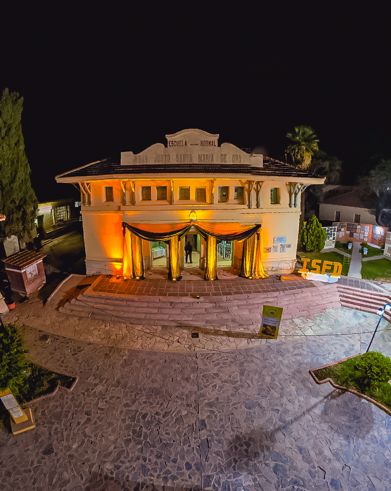

Nivel Superior
Instituto Superior de Formación Docente (ISFD).
Bienvenidos al Nivel Superior
El Instituto Superior de Formación Docente (ISFD) continúa la tradición de formar maestros y maestras en Jáchal.
Historia de la formación docente
En la Escuela Normal Superior “Fray Justo Santa María de Oro”, la formación docente se remonta a la década del 30; hacia 1973 se creó el bachillerato con orientación docente y, en 1975, se configuró el perfil de Instituto de Formación Docente con la creación del Profesorado para la Enseñanza Primaria —en sintonía con el proceso nacional que desde 1968 suprimió el magisterio de nivel medio y abrió desde 1970 los profesorados terciarios—.
A lo largo de su trayectoria atravesó distintas etapas según las propuestas de las políticas educativas (PEP, MEB, PTFD, PEGB, PEP y PEI). Hoy el instituto ofrece carreras de formación docente con títulos de validez nacional y complementa su tarea con ciclos de actualización, cursos de capacitación y especializaciones.
Un capítulo de la educación argentina
Las escuelas normales constituyen un capítulo especial en la historia de la educación de nuestro país. El normalismo argentino fue la piedra basal y la cuna de la formación docente.
Este proceso se inicia junto con la consolidación del Estado Nación y, a través de distintas políticas educativas, dio origen a la formación docente del nivel Superior.
En nuestra institución
En la Escuela Normal Superior Fray Justo Santa María de Oro, la tarea de formar maestros tuvo un desarrollo histórico propio y se convirtió en una parte central de su identidad educativa.
Actualmente, el instituto sostiene su compromiso con la Educación Superior pública y con la comunidad de Jáchal.
Carreras y planes de estudio
La formación docente del nivel superior cuenta con profesorados organizados por unidades curriculares, prácticas docentes e investigación educativa.
1° Año
- Aportes de la Sociología y Antropología a la Educación (1° Cuat.)
- Psicología Educacional (1° Cuat.)
- Matemática (1° Cuat.)
- Ciencias Naturales (1° Cuat.)
- Teorías de la Educación (2° Cuat.)
- Iniciación a las TIC (2° Cuat.)
- Lengua y Literatura (2° Cuat.)
- Ciencias Sociales (2° Cuat.)
- Sujeto de Educación Primaria I (2° Cuat.)
- Didáctica y Currículum (2° Cuat.)
- Práctica I (Anual)
2° Año
- Historia Social Argentina y Latinoamericana (1° Cuat.)
- Alfabetización (1° Cuat.)
- Didáctica de las Ciencias Sociales I (1° Cuat.)
- Sujeto de la Educación Primaria II (1° Cuat.)
- Estado, Sociedad y Educación (2° Cuat.)
- Filosofía y Conocimiento (2° Cuat.)
- Didáctica de la Matemática I (2° Cuat.)
- Didáctica de las Ciencias Naturales I (2° Cuat.)
- Práctica II (Anual)
3° Año
- Investigación Educativa I (1° Cuat.)
- Didáctica de la Matemática II (1° Cuat.)
- Didáctica de las Ciencias Naturales II (1° Cuat.)
- Educación Tecnológica (1° Cuat.)
- Formación Ética y Ciudadana (2° Cuat.)
- Comunicación, Cultura y TIC (2° Cuat.)
- Didáctica de la Lengua y la Literatura (2° Cuat.)
- Didáctica de las Ciencias Sociales II (2° Cuat.)
- Práctica III (Anual)
4° Año
- Investigación Educativa II (1° Cuat.)
- UDI I (1° Cuat.)
- UDI II (CFE) (2° Cuat.)
- UDI III (2° Cuat.)
- Práctica IV (Anual)
1° Año
- Aportes de la Sociología y Antropología a la Educación (1° Cuat.)
- Psicología Educacional (1° Cuat.)
- Sujeto del Nivel Inicial I (1° Cuat.)
- Prácticas de Lengua y Literatura (1° Cuat.)
- Teorías de la Educación (2° Cuat.)
- Didáctica y Currículum (2° Cuat.)
- Iniciación a las TIC (2° Cuat.)
- Sujeto del Nivel Inicial II (2° Cuat.)
- Ciencias Sociales (2° Cuat.)
- Práctica I (Anual)
2° Año
- Historia Social Argentina y Latinoamericana (1° Cuat.)
- Didáctica de Nivel I (1° Cuat.)
- Matemática (1° Cuat.)
- Ciencias Naturales (1° Cuat.)
- Plástica y su Didáctica (1° Cuat.)
- Estado, Sociedad y Educación (2° Cuat.)
- Filosofía y Conocimiento (2° Cuat.)
- Didáctica de Nivel II (2° Cuat.)
- Literatura Infantil (2° Cuat.)
- Expresión Corporal (2° Cuat.)
- Práctica II (Anual)
3° Año
- Investigación Educativa I (1° Cuat.)
- Didáctica de la Lengua y la Literatura Infantil (1° Cuat.)
- Didáctica de las Ciencias Sociales (1° Cuat.)
- Música y su Didáctica (1° Cuat.)
- Formación Ética y Ciudadana (2° Cuat.)
- Comunicación, Cultura y TIC (2° Cuat.)
- Didáctica de la Matemática (2° Cuat.)
- Didáctica de las Ciencias Naturales (2° Cuat.)
- Educación Física en el Nivel Inicial (2° Cuat.)
- Práctica III (Anual)
4° Año
- Investigación Educativa II (1° Cuat.)
- UDI I (1° Cuat.)
- UDI II (CFE) (2° Cuat.)
- UDI III (2° Cuat.)
- Práctica IV (Anual)
Módulos y seminarios de profundización
Según la Resolución CFE N° 57/08 (Anexo I), los contenidos mínimos se organizan en seis módulos temáticos (sin relación de correlatividad entre sí) y dos seminarios de profundización.
| Módulo / Seminario | Horas presenciales | Horas no presenciales |
|---|---|---|
| Didáctica de Ciencias Sociales en plurigrado | 26 horas reloj | 16 horas reloj |
| Didáctica de Ciencias Naturales en plurigrado | 26 horas reloj | 16 horas reloj |
| Didáctica de Matemática en plurigrado | 26 horas reloj | 16 horas reloj |
| Didáctica de Lengua en plurigrado | 26 horas reloj | 16 horas reloj |
| Alfabetización inicial en plurigrado | 40 horas reloj | 16 horas reloj |
| Educación en ámbitos rurales | 40 horas reloj | 16 horas reloj |
| Seminario de profundización I | 50 horas reloj | 10 horas reloj |
| Seminario de profundización II | 50 horas reloj | 10 horas reloj |
| TOTAL | 284 | 116 |
50 años de la creación del Instituto (2025)
En el año 2025 se celebraron los 50 años de la creación del Instituto, un hito que invitó a la institución formadora a generar espacios de reflexión, reconocer a quienes aportaron a construir esta historia y proyectar nuevos desafíos y líneas de acción para seguir creciendo.
